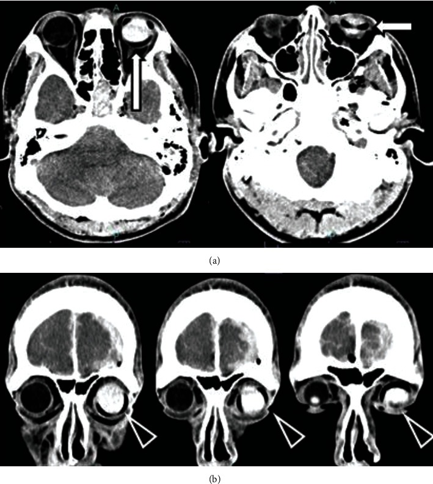
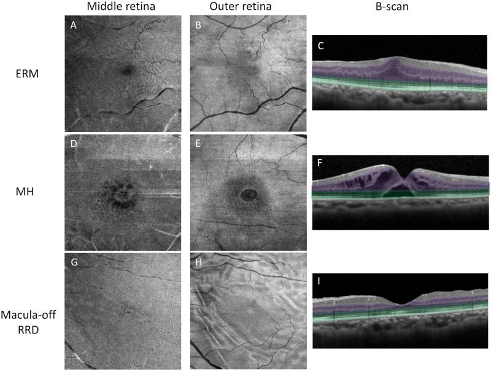
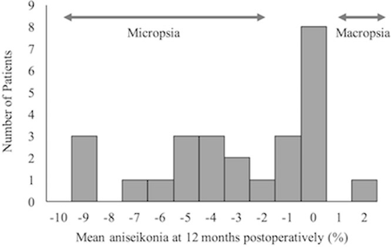
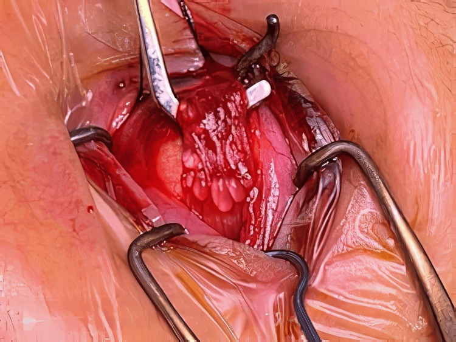

1499 — Song thị và lác sau mổ bong võng mạc KHÔNG do đai: cơ chế, phân biệt, khi nào lăng kính, khi nào mổ cơ / Diplopia and strabismus after retinal detachment repair without a buckle
Tags: pattern:nhin-doi pattern:lac pattern:aniseikonia pattern:di-lech-vong-mac vung:mat vung:hoang-diem vung:hoc-mat anatomy:co-van-nhan protocol:OCT protocol:CT-hoc-mat protocol:MRI-hoc-mat protocol:do-goc-lac score:goc-lac-PD incidentaloma:dau-silicone
Mức chắc chắn (certainty): tổng hợp y văn (literature synthesis) — dựng từ sổ đăng ký 25.169 mắt sau mổ bong võng mạc (J AAPOS 2025, PMC12185234), tổng quan song thị sau mổ mắt (J Binocul Vis Ocul Motil 2021, PMID 34752180), 26 mắt đo aniseikonia sau bong hoàng điểm (Sci Rep 2019, PMC6690871, CC BY 4.0), 42 mắt bong hoàng điểm đo metamorphopsia/aniseikonia (PLoS One 2020, PMC7209121, CC BY 4.0), 98 mắt chụp huỳnh quang đáy mắt tìm di lệch võng mạc (Medicina 2026, PMC12943232, CC BY 4.0), 45 bệnh nhân đo thị giác hai mắt sau cắt dịch kính (Ophthalmol Ther 2026, PMC12976278, CC BY 4.0), 25 bệnh nhân mổ cơ sau đai (J AAPOS 2013, PMC3870881), 47 bệnh nhân mổ cơ có/không tháo đai (Acta Ophthalmol 2022, DOI 10.1111/aos.14888), 40 mắt tháo đai (Korean J Ophthalmol 2020, PMC7738227), 31 bệnh nhân đeo lăng kính (Indian J Ophthalmol 2022, PMC9023992), tổng quan macular diplopia (Cureus 2026, PMC13157677, CC BY 4.0) và 2 ca dầu silicone trong cơ/hốc mắt (Cureus 2023 PMC10369194; Int J Surg Case Rep 2026 PMC13747450, CC BY-SA 4.0). Nhóm không có bệnh nhân của mình; chỗ suy luận ghi [suy luận].
Ranh giới với bài đã có: 1493 trả lời biến chứng của đai hoàng điểm và khi nào tháo đai; 1878 chọn đai hay cắt dịch kính; 1879 phủ màng đứt hoàng điểm sau mổ; 1498 phủ B-scan trước mổ. Bài này trả lời câu hỏi hay bị gộp nhầm: sau khi võng mạc đã áp — mà bệnh nhân nhìn đôi hoặc lác — nguyên nhân nào là cảm giác (macular/sensory) và nguyên nhân nào là cơ học/thần kinh, cận lâm sàng nào phân biệt, và khi nào chỉ cần lăng kính, khi nào mới mổ cơ.
Câu chốt — năm con số phải thuộc: (1) Song thị sau mổ bong võng mạc không hiếm nhưng thường nhẹ: 1,54% sau bơm khí (PR), 2,28% sau cắt dịch kính ± đai (PPV±SB), 2,73% sau đai đơn thuần; mổ cơ chỉ 0,22–0,27% (sổ đăng ký 25.169 mắt, PMC12185234). (2) Sau bong hoàng điểm, aniseikonia vẫn còn −3,1 ± 3,2% ở 12 tháng (từ −5,3% ở 3 tháng); 54% micropsia, 4% macropsia, khoảng −9% đến +2% (PMC6690871) — đây là song thị khi trục mắt bình thường, nên lăng kính và mổ cơ đều không sửa được. (3) Bong hoàng điểm là yếu tố của di lệch võng mạc: 16,3% mắt có di lệch, 81,25% di lệch xuống dưới; trong nhóm di lệch 81,2% là macula-off so với 51,2% nhóm không di lệch (p = 0,027) — nhưng 0/98 bệnh nhân than song thị, nên di lệch không đồng nghĩa song thị (PMC12943232). (4) Khi đã mổ cơ, thành công vận động 72% (định nghĩa < 10Δ ngang + < 4Δ dọc, sau 1,8 ± 0,9 lần mổ) và 62% hết song thị (PMC3870881); định nghĩa chặt ≤ 6 PD cho 76% (giữ đai) và 71% (tháo đai), hết song thị 79% và 93% (DOI 10.1111/aos.14888). (5) Tháo đai để chữa lác là đánh đổi: tái bong 10% chung, 25% nếu đai vòng so với 0% đai đoạn (p = 0,020) (PMC7738227); trong 2.375 mắt đặt đai, chỉ 35 (1,5%) phải tháo, tái bong 11%, 3/4 ca tái bong xảy ra khi tháo trong tháng đầu (PMC13326349).
1. Tổng quan bệnh học – cơ chế hình ảnh
1.1 Hai loại song thị hoàn toàn khác nhau — và vì sao phải phân biệt trước khi kê đơn
- Song thị cơ học/thần kinh (motor): hai mắt lệch trục thật, ảnh rơi lên hai điểm võng mạc không tương ứng. Đo được bằng cover test + lăng kính, thay đổi theo hướng nhìn, và giảm khi che một mắt. Nguyên nhân: hạn chế cơ học (sẹo, dầu silicone trong cơ, đai), mất cân bằng cơ sau mổ, liệt dây IV/VI.
- Song thị cảm giác (sensory/macular): trục mắt gần như thẳng hàng, nhưng một điểm vàng bị kéo lệch (macular heterotopia) hoặc kích thước ảnh hai mắt khác nhau (aniseikonia). Não nhận ảnh trung tâm không tương ứng trong khi hợp thị ngoại vi vẫn còn — gọi là central-peripheral rivalry (CPR). Đây là macular diplopia / dragged-fovea diplopia syndrome (DFDS).
- TẠI SAO phải phân biệt: hai loại điều trị ngược nhau. Motor → lăng kính hoặc mổ cơ. Sensory → lăng kính thường thất bại, mổ cơ không giúp (thậm chí làm nặng thêm vì tạo lệch trục thật trên mắt đã có bất tương ứng trung tâm); điều trị là che một phần, chỉnh kính, xử lý bệnh hoàng điểm và chờ thích nghi vỏ não.
1.2 Vì sao "không đai" vẫn bị song thị — bốn cơ chế và con số
(a) Bong hoàng điểm làm thay đổi khoảng cách tế bào cảm quang → aniseikonia. Khi võng mạc bong rồi áp lại, lớp tế bào cảm quang có thể dãn ra hoặc co lại không đều; cùng một vật ở hai mắt cho hai kích thước ảnh khác nhau. Đo bằng New Aniseikonia Test (NAT): sau bong hoàng điểm, aniseikonia trung bình −5,3 ± 4,2% ở 3 tháng, −4,4 ± 4,4% ở 6 tháng, −3,1 ± 3,2% ở 12 tháng; 54% micropsia, 4% macropsia, 42% không còn; biên độ −9% đến +2% (26 mắt, PMC6690871). Aniseikonia giảm dần nhưng không về 0 — đúng với lâm sàng "nhìn đôi mãi dù mắt đã áp".
(b) Di lệch võng mạc (retinal displacement) làm lệch điểm vàng. Trên huỳnh quang đáy mắt xanh (blue-fundus autofluorescence, BFAF), mạch võng mạc bị kéo lệch so với vị trí giải phẫu ban đầu. Trong 98 mắt, 16,3% có di lệch, 81,25% lệch xuống dưới (dịch dưới võng mạc di chuyển theo trọng lực dưới bóng khí), 18,75% lệch lên; nhóm di lệch có 81,2% macula-off so với 51,2% nhóm không di lệch (p = 0,027) (PMC12943232). Nhưng 0/98 bệnh nhân báo song thị — nghĩa là di lệch là điều kiện cần, không phải điều kiện đủ: phần lớn não bù trừ được, chỉ một số ít có aniseikonia vượt ngưỡng dung nạp mới thành song thị.
(c) Bệnh hoàng điểm thứ phát sau mổ. Màng trước võng mạc (epiretinal membrane, ERM) sau bong võng mạc co kéo điểm vàng theo phương tiếp tuyến. Trong 42 mắt bong hoàng điểm, ở 6 tháng 35,7% có metamorphopsia đáng kể và 52,3% micropsia (PMC7209121). ERM là nguyên nhân thường gặp nhất của macular diplopia nói chung: trong 56 bệnh nhân ERM, 21% có song thị kiểu CPR; trong 50 bệnh nhân ERM, 44% (11/25) ca có song thị là do bất tương ứng võng mạc, 28% (7/25) do lác thực sự, và 60% (15/25) ca không song thị vẫn có bất tương ứng (trích trong tổng quan PMC13157677).
(d) Thay đổi cơ học/viêm quanh cơ do dầu silicone. Dầu silicone có thể thấm ra dưới kết mạc và vào cơ trực, tạo nang dầu + xơ hóa quanh chỗ bám cơ — vừa gây hạn chế, vừa làm mổ cơ khó hơn (chảy máu, khó tách cơ). Ca 58 tuổi sau nhiều lần mổ bong võng mạc có nang dầu trong cơ trực ngoài, mô học là hoại tử mỡ + dầu silicone (PMC10369194); ca 26 tuổi có nang dầu dưới kết mạc quanh cơ trực, xơ hóa làm thì mổ cơ kéo dài và chảy máu nhiều (PMC13747450).
1.3 TẠI SAO hình ảnh lại quan trọng — nhưng không phải hình ảnh nào cũng trả lời cùng câu hỏi
- CT/MRI hốc mắt trả lời cơ học: đai củng mạc nằm đâu, có dầu silicone trong hốc mắt/cơ không, cơ có to, lệch, dính không, có dị vật không. Đây là phần X-quang/CT/MRI của bài.
- OCT hoàng điểm (enface + B-scan) và BFAF trả lời cảm giác: điểm vàng có lệch, màng co kéo, mất lớp ellipsoid zone không. Không thấy được trên CT/MRI thường quy.
- Hai bẫy vật lý của CT: dầu silicone tăng đậm độ 106–139 HU, máu tụ 50–90 HU, có ca dầu đo ~89 HU nên chồng lấp; dầu nhẹ hơn nước (tỷ trọng 0,97) nhưng giàu nguyên tử silic nên vẫn sáng hơn dịch kính (PMC11883950). Ngược lại, dải silicone vòng đai là cấu trúc giảm đậm độ chạy dọc củng mạc — không phải khí, không phải mảnh xương (PMC8238605).
2. Mẫu hình + chẩn đoán phân biệt theo vị trí và theo thời điểm (gamut)
2.1 Mẫu hình chốt
Bệnh nhân đã mổ bong võng mạc (PPV ± khí/dầu, hoặc bơm khí), võng mạc áp, đến khám vì "nhìn một thành hai" hoặc "mắt lác ra". Ba câu hỏi theo thứ tự:
- Trục mắt có lệch thật không? (cover test, đo góc bằng lăng kính, 9 hướng nhìn)
- Nếu lệch: có hạn chế cơ học không? (forced duction; so sánh hai mắt)
- Nếu trục gần thẳng: có bất tương ứng võng mạc/aniseikonia không? (NAT, M-CHARTS, lights on-off test, OCT/BFAF)
2.2 Gamut theo cơ chế — mnemonic SILO
- S — Sensory (macular diplopia/DFDS): trục thẳng, song thị dọc nhiều hơn ngang (biên độ hợp thị dọc hẹp hơn), không đáp ứng lăng kính, giảm khi che một mắt hoặc trong ánh sáng mờ (giảm hợp thị ngoại vi). Nguyên nhân: bong hoàng điểm, ERM sau mổ, di lệch võng mạc, phù hoàng điểm.
- I — Incarceration/restriction (hạn chế cơ học): hạn chế một hướng nhìn, forced duction dương tính, góc không đổi theo thời gian; do sẹo xơ, dầu silicone trong cơ, đai củng mạc, dính cơ chéo trên (đặc biệt sau đai: hạn chế nhìn xuống → nghi giam giữ cơ chéo trên).
- L — Lệch trục do can thiệp (muscle imbalance): lác ngang hoặc dọc xuất hiện ngay sau mổ, không hạn chế khi kéo thụ động; do cắt/khâu cơ, chùng cơ, hoặc lác sẵn có bộc lộ sau khi thị lực hồi phục.
- O — Ophthalmoplegia (liệt thần kinh): dây IV (song thị dọc, nặng khi nhìn xuống–vào trong, đầu nghiêng bù trừ), dây VI (song thị ngang khi nhìn xa, mắt quay vào trong); có thể sẵn có hoặc do chấn thương/gây mê. Đây là nhóm hiếm sau PPV đơn thuần.
Ngoài SILO — hai bệnh cảnh "bắt chước":
- Lác do mất thị lực (sensory exotropia): mắt kém thị lực lâu năm lác ra ngoài, không song thị vì đã ức chế; mổ cơ chỉ để thẩm mỹ, không phải để hết song thị.
- Tái bong võng mạc: thị lực giảm mới, ám điểm, không giải thích bằng lác; phải soi đáy mắt/B-scan trước khi quy mọi triệu chứng cho cơ vận nhãn.
2.3 Gamut theo thời điểm
| Thời điểm | Cơ chế hay gặp | Hướng xử lý |
|---|---|---|
| 0–6 tuần | Phù nề cơ/kết mạc sau mổ, bóng khí, dầu silicone còn trong mắt, lác do phù tạm thời | Theo dõi; đo lại sau khi hết phù; chưa mổ cơ |
| 6 tuần – 6 tháng | Bộc lộ lác sẵn có, aniseikonia sau bong hoàng điểm, ERM sớm, xơ hóa quanh cơ | Đo lặp lại; lăng kính/che một mắt; OCT hoàng điểm; chưa vội mổ |
| > 6 tháng | Hạn chế cơ học cố định, lác ổn định, đai/dầu silicone di chuyển, ERM tiến triển | Cân nhắc mổ cơ hoặc xử lý nguyên nhân; chụp CT/MRI nếu nghi cơ học |
3. Bảng so sánh phân biệt (ma trận đối chiếu)
| Thực thể (entity) | Hình ảnh/lâm sàng điển hình | Chốt vào (rule-in) | Chốt loại (rule-out) | Gợi ý xác nhận |
|---|---|---|---|---|
| Macular diplopia (DFDS) | Trục gần thẳng; song thị dọc, hằng định; thị lực có thể tốt; OCT: lệch điểm vàng, ERM, mất hõm | Lights on-off test dương (hết song thị khi loại hợp thị ngoại vi); aniseikonia ≥ 5%; prism không cải thiện | Lác đo được > 10Δ và đáp ứng lăng kính → không phải DFDS đơn thuần | NAT + M-CHARTS + OCT enface/BFAF; hỏi "nhìn đôi khi đọc sách" |
| Aniseikonia do bất tương ứng kích thước ảnh | Nhìn đôi + méo hình, đau đầu khi đọc; hai mắt khác khúc xạ/IOL | NAT ≥ 5%; song thị giảm khi che một mắt; không đổi theo hướng nhìn | Đo góc lác thay đổi theo hướng → lác cơ học | NAT; thử kính iseikonic; OCT tìm nguyên nhân hoàng điểm |
| Hạn chế cơ học do sẹo/dầu silicone/đai | Hạn chế một hướng, góc lớn, không tiến triển; tiền sử tháo dầu/mổ lại; CT/MRI: dầu trong cơ/hốc mắt, đai giảm đậm độ, cơ dày/dính | Forced duction dương tính; CT/MRI thấy vật liệu hoặc cơ dính; góc không đổi sau 6 tháng | Forced duction âm + góc thay đổi → lác do cơ/thần kinh | CT hốc mắt ≤ 1 mm + MRI T1 fat-sat; so sánh cơ hai bên |
| Lác do cắt/khâu cơ hoặc lác sẵn có | Lác ngang (hay gặp) hoặc dọc, xuất hiện ngay sau mổ; không hạn chế | Forced duction âm; đo góc ổn định ≥ 6 tháng; tiền sử cắt cơ/chỉnh cơ | Hạn chế rõ + đau/đỏ → nghĩ sẹo/dầu | Đo 9 hướng + lăng kính; Hess/Lancaster |
| Liệt dây IV (trochlear) | Song thị dọc, nặng khi nhìn xuống–vào trong, nghiêng đầu về bên đối diện; có thể bẩm sinh bù trừ | Parks 3 bước dương; tour torsion; độ lệch tăng khi nghiêng đầu | Không đổi theo tư thế đầu → không phải liệt IV | Đo độ xoắn (Maddox đôi); MRI sọ chỉ khi nghi nguyên nhân trung ương |
| Liệt dây VI (abducens) | Song thị ngang, nặng khi nhìn xa; mắt quay vào trong ở thì nhìn ngang | Hạn chế dạng; góc lớn hơn khi nhìn về bên liệt | Góc như nhau mọi hướng → lác cơ học/comitant | Cover test xa–gần; đo dạng; theo dõi 6 tháng |
| Lác do mất thị lực (sensory exotropia) | Mắt lác ngoài, thị lực kém, không song thị | Không có song thị; góc lớn, ổn định; tiền sử thị lực kém lâu năm | Bệnh nhân than nhìn đôi → không phải đơn thuần sensory exotropia | Soi đáy mắt; đo thị lực; OCT |
| Tái bong võng mạc | Thị lực giảm mới, ám điểm, có thể lác mới; B-scan/OCT bất thường | Bong trên OCT/B-scan; thị lực giảm không tương xứng với lác | Đáy mắt áp, OCT ổn định → loại trừ | Soi đáy mắt + B-scan khi không thấy đáy; chụp lại OCT |
4. Protocol chụp – đọc – quyết định + ngưỡng xử trí
4.1 Thăm khám chức năng (làm trước mọi hình ảnh)
- Đo thị lực từng mắt + khúc xạ (không có ngưỡng hình ảnh nào thay được bước này).
- Cover test xa và gần, đo góc lác bằng lăng kính ở 9 hướng nhìn, ghi PD (prism diopter); đo góc nguyên phát và góc ở hướng chức năng (đọc sách, lái xe).
- Forced duction test (kéo thụ động): dương tính = hạn chế cơ học; âm tính = lác do cơ/thần kinh. Đây là nghiệm pháp rẻ nhất phân đôi hai nhóm.
- Đo xoắn bằng Maddox đôi khi nghi dây IV; Parks 3 bước khi song thị dọc.
- NAT (aniseikonia) và M-CHARTS (metamorphopsia) khi trục gần thẳng; lights on-off test khi nghi DFDS.
4.2 Hình ảnh — chọn theo câu hỏi, không chụp tràn lan
| Câu hỏi lâm sàng | Modality đầu tay | Ngưỡng/thông số cần ghi | Ghi chú |
|---|---|---|---|
| Có đai, dầu silicone, dị vật trong hốc mắt/cơ không? | CT hốc mắt không cản quang, lát ≤ 1 mm, axial + coronal, cửa sổ xương và mô mềm | Dầu 106–139 HU (chồng lấp máu 50–90 HU); dải đai giảm đậm độ | Không chẩn đoán "xuất huyết" chỉ vì đậm độ cao khi có tiền sử bơm dầu |
| Cơ có to, lệch, dính, thiếu không? | MRI hốc mắt T1 fat-sat ± gadolinium + T2 fat-sat, lát ≤ 2 mm | Độ dày cơ so với bên đối diện; vị trí chỗ bám; tín hiệu xơ (T2 thấp) | T1 fat-sat giúp tách cơ khỏi mỡ; gadolinium cho viêm/u |
| Điểm vàng có lệch/co kéo? | OCT hoàng điểm (B-scan + enface); BFAF | Lệch mạch/điểm vàng; mất lớp ellipsoid zone; ERM | OCT là chuẩn cho DFDS; BFAF thấy di lệch |
| Không nhìn được đáy mắt? | B-scan 10 MHz (bài 1498) | Bong võng mạc, màng, dầu | Không loại trừ rách nhỏ < 0,2–0,5 mm |
| Nghi liệt dây IV/VI trung ương | MRI sọ + hốc mắt có gadolinium | Đường đi dây thần kinh, ổ tổn thương | Chỉ khi không giải thích được bằng cơ học hoặc có dấu thần kinh khác |
4.3 Ba ngưỡng định lượng quyết định điều trị
| Ngưỡng | Con số | Ý nghĩa thực hành |
|---|---|---|
| Aniseikonia | ≥ 5% được xem là đáng kể trong loạt DFDS (5–18% ở 7 ca) | ≥ 5% + trục thẳng → nghĩ sensory; không mổ cơ; thử kính/che một phần |
| Góc lác mổ cơ thành công | < 10Δ ngang + < 4Δ dọc (PMC3870881) hoặc ≤ 6 PD (DOI 10.1111/aos.14888) | Nói với bệnh nhân "thành công" phụ thuộc định nghĩa; đừng hứa hết song thị 100% |
| Thời điểm mổ cơ | ≥ 6 tháng sau mổ bong võng mạc, khi góc ổn định | Chờ để phù/xơ ổn định và aniseikonia giảm; ngoại lệ: hạn chế cơ học rõ, đai lộ/nhiễm, song thị không dung nạp |
Số liệu để tư vấn (không phải lời hứa):
- Lăng kính: 31 bệnh nhân, liều trung bình 13,3 PD, 87% hết song thị hoàn toàn, 96,8% tiếp tục dùng; hiệu quả cao ở lác mất bù, liệt dây VI và IV (PMC9023992). Đây là bước đệm hợp lý trong 6 tháng chờ.
- Mổ cơ: 72% thành công vận động, 62% hết song thị, trung bình 1,8 lần mổ (25 bệnh nhân, PMC3870881); 76%/71% thành công vận động và 79%/93% hết song thị khi giữ/tháo đai (47 bệnh nhân, DOI 10.1111/aos.14888). Góc ngang nhỏ và hạn chế tối thiểu là yếu tố tiên lượng tốt.
- Tháo đai: không cải thiện kết quả mổ cơ trong loạt 25 bệnh nhân (PMC3870881); tái bong 10% chung, 25% với đai vòng (PMC7738227); trong 2.375 mắt, 1,5% phải tháo, tái bong 11%, 3/4 xảy ra khi tháo < 1 tháng (PMC13326349). Vì vậy chỉ tháo đai khi có lý do riêng (lộ, nhiễm, đau, đai di chuyển ra trước gây hạn chế), không tháo "để chữa lác".
flowchart TD
A[Song thị sau mổ bong võng mạc] --> B[Đo thị lực + cover test + góc lác 9 hướng]
B --> C{Trục mắt lệch thật?}
C -->|Có| D[Forced duction]
C -->|Không| E[NAT + lights on-off + OCT hoàng điểm]
D -->|Hạn chế| F[Hạn chế cơ học: sẹo, dầu silicone, đai, cơ chéo trên]
D -->|Không hạn chế| G[Lác cơ/thần kinh: cắt cơ, lác sẵn có, dây IV/VI]
E -->|Aniseikonia ≥ 5% hoặc lights on-off dương| H[Macular diplopia]
E -->|Âm tính| I[Khám lại khúc xạ, khô mắt, bệnh võng mạc]
F --> J[CT hốc mắt 1 mm ± MRI T1 fat-sat]
G --> J
H --> K[OCT enface + BFAF: tìm di lệch/ERM]
J --> L{Góc ổn định ≥ 6 tháng?}
L -->|Không| M[Lăng kính/che một mắt + theo dõi]
L -->|Có| N[Mổ cơ hoặc xử lý nguyên nhân]
H --> O[Che một phần/kính iseikonic; điều trị ERM/phù; KHÔNG mổ cơ]
5. Biến thể bình thường và cạm bẫy
5.1 Biến thể bình thường dễ nhầm
- Song thị thoáng qua sau mổ: phù kết mạc/cơ, bóng khí, dầu silicone còn trong mắt trong 6 tuần đầu; không chẩn đoán lác cố định.
- Lác sẵn có bị "bộc lộ": bệnh nhân có lác ẩn (phoria) hoặc vi lác từ trước; khi mắt kém bị che/băng hoặc khi thị lực hai mắt chênh sau mổ, lác mất bù — hỏi ảnh cũ, tiền sử lác, tiền sử đeo kính.
- Lệch trục nhẹ do kính mới: thay đổi khúc xạ/IOL sau mổ gây aniseikonia nhẹ; đo lại khúc xạ trước khi quy cho cơ.
- Dầu silicone "tăng đậm độ" trên CT: không phải máu tụ; dầu nhẹ hơn nước nhưng 106–139 HU do nguyên tử silic (PMC11883950), có ca ~89 HU. Dải đai silicone lại giảm đậm độ (PMC8238605) — hai vật liệu ngược tín hiệu, dễ đọc sai nếu không hỏi tiền sử.
5.2 Cạm bẫy (pitfall)
- Gọi macular diplopia là "lác" rồi mổ cơ: trục gần thẳng, prism không cải thiện, mổ cơ không giúp và có thể làm song thị nặng hơn. Dấu hiệu gợi ý: song thị dọc, hằng định, giảm khi che một mắt/ánh sáng mờ, có ERM/di lệch điểm vàng trên OCT.
- Bỏ sót tái bong võng mạc: bệnh nhân "lác mới + nhìn mờ" — soi đáy mắt/B-scan trước, đừng chỉ đo góc lác.
- Đo góc quá sớm rồi mổ: trong 6 tháng đầu, phù/xơ còn thay đổi; mổ sớm dễ quá chỉnh hoặc tái phát.
- Tháo đai "cho nhanh": tái bong 10% (đai vòng 25%), và không cải thiện kết quả mổ cơ trong loạt 25 bệnh nhân — chỉ tháo khi có chỉ định riêng.
- Quên dầu silicone trong cơ: nang dầu + xơ hóa làm mổ cơ khó, chảy máu, không tìm thấy cơ; CT/MRI trước mổ giúp lập kế hoạch (PMC10369194, PMC13747450).
- Satisfaction of search: thấy lác là dừng, bỏ sót ERM/phù hoàng điểm — luôn OCT hoàng điểm khi có song thị sau bong hoàng điểm.
- "Di lệch võng mạc = song thị": sai. 16,3% mắt có di lệch nhưng 0/98 than song thị (PMC12943232); di lệch chỉ thành triệu chứng khi aniseikonia vượt ngưỡng.
6. Tự lượng giá — Blind Quiz
Ca 1 — Nam 18 tuổi, chấn thương đầu, CT sọ–mắt được chụp tại cấp cứu. Nhìn ảnh trước, mô tả hai cấu trúc bất thường.

- Gợi ý lâm sàng: bệnh nhân hôn mê sau tai nạn, không khai thác được tiền sử mắt; CT được đọc ban đầu là "xuất huyết nội nhãn".
- Câu hỏi: (1) Cấu trúc tăng đậm độ trong nhãn cầu trái là gì? (2) Đường giảm đậm độ chạy dọc củng mạc là gì? (3) Câu hỏi nào phải hỏi người nhà trước khi kết luận xuất huyết?
Bấm để hiện đáp án (findings + chẩn đoán)
- Findings: (a) axial: nhãn cầu trái tăng đậm độ toàn bộ (đầu mũi tên đen) + đường giảm đậm độ mảnh chạy theo củng mạc (mũi tên trắng); (b) coronal: vòng đai giảm đậm độ quanh củng mạc (đầu mũi tên).
- Chẩn đoán: dầu silicone nội nhãn (tăng đậm độ, 106–139 HU, dễ nhầm máu tụ 50–90 HU) + đai silicone vòng (giảm đậm độ) sau mổ bong võng mạc. Không phải xuất huyết, không phải khí.
- Vì sao: dầu silicone nhẹ hơn nước (0,97) nhưng giàu silic → tăng đậm độ trên CT; dải đai silicone giảm đậm độ. Tiền sử mổ mắt là chốt.
- Nguồn ảnh: Case Rep Emerg Med 2021, PMC8238605, Fig. 1, CC BY 4.0 (nguyên bản).
Ca 2 — Nữ 67 tuổi, 6 tháng sau cắt dịch kính + khí vì bong hoàng điểm; võng mạc áp, thị lực 0,5. Nhìn đôi khi đọc sách, không nhìn đôi khi lái xe. Ảnh OCT enface và B-scan.

- Gợi ý: hai mắt thẳng hàng trên cover test; đo góc 2Δ dọc; NAT 6%; prism 3Δ không đỡ.
- Câu hỏi: (1) Tổn thương trên OCT thuộc nhóm nào? (2) Vì sao lăng kính và mổ cơ không giải quyết song thị? (3) Bước tiếp theo?
Bấm để hiện đáp án (findings + chẩn đoán)
- Findings: hàng dưới (macula-off RRD) — enface lớp giữa/ngoài: nếp và mất hõm hoàng điểm; B-scan: võng mạc áp nhưng bề mặt không đều, không có lỗ.
- Chẩn đoán: macular diplopia/DFDS sau bong hoàng điểm — bất tương ứng võng mạc + aniseikonia 6%, không phải lác thật. Prism không sửa được vì ảnh khác kích thước, không phải lệch trục; mổ cơ càng sai.
- Bước tiếp theo: che một phần/che luân phiên, kính iseikonic nếu dung nạp, điều trị ERM/phù nếu có; không mổ cơ; theo dõi thích nghi 3–6 tháng.
- Nguồn ảnh: PLoS One 2020, PMC7209121, Fig. 3, CC BY 4.0 (nguyên bản).
Ca 3 — Nữ 58 tuổi, 12 tháng sau mổ bong hoàng điểm; than "hình nhỏ bên mắt mổ". Biểu đồ aniseikonia 12 tháng của một loạt 26 mắt.

- Gợi ý: thị lực 0,8; cover test 1Δ; NAT −4%; không có ERM.
- Câu hỏi: (1) Trục hoành ghi gì và đơn vị? (2) Bao nhiêu % bệnh nhân còn micropsia ở 12 tháng? (3) Có nên mổ cơ 1Δ không?
Bấm để hiện đáp án (findings + chẩn đoán)
- Findings: trục hoành = aniseikonia trung bình ở 12 tháng (%), từ −10% đến +2%; cột cao nhất ở 0%, nhưng 14/26 (54%) ở phía micropsia, 1/26 (4%) macropsia; 42% không còn.
- Chẩn đoán: aniseikonia tồn dư sau bong hoàng điểm — micropsia ở mắt mổ. Không mổ cơ cho góc 1Δ; giải thích giảm dần nhưng có thể còn (trung bình −3,1% ở 12 tháng).
- Vì sao: khoảng cách tế bào cảm quang thay đổi sau bong → kích thước ảnh khác; lăng kính chỉ dịch ảnh, không đổi kích thước ảnh.
- Nguồn ảnh: Sci Rep 2019, PMC6690871, Fig. 2, CC BY 4.0 (nguyên bản).
Ca 4 — Nữ 58 tuổi, nhiều lần mổ bong võng mạc + dầu silicone, lác ngoài mắt trái. Ảnh trong mổ.

- Gợi ý: không hạn chế khi kéo thụ động; CT trước mổ không thấy bất thường trong cơ (cửa sổ mô mềm).
- Câu hỏi: (1) Nang trong cơ là gì? (2) Vì sao CT có thể âm tính? (3) Điều này thay đổi kế hoạch mổ thế nào?
Bấm để hiện đáp án (findings + chẩn đoán)
- Findings: nhiều nang nhỏ, trong, bám chắc vào cơ trực ngoài; mô học hoại tử mỡ + dầu silicone.
- Chẩn đoán: dầu silicone thấm vào cơ trực ngoài. CT có thể âm tính vì lượng dầu nhỏ, nằm trong cơ và cửa sổ mô mềm không đủ tương phản; MRI T1/T2 fat-sat nhạy hơn với dầu trong mô mềm [suy luận].
- Kế hoạch: cảnh báo mổ cơ khó, chảy máu, dính; có thể cần MRI trước mổ; trong mổ lấy nang, cầm máu kỹ, rồi recession/resection như ca này đã thành công.
- Nguồn ảnh: Cureus 2023, PMC10369194, Fig. 1, CC BY 4.0 (nguyên bản).
Bài liên quan chéo
- 400 – Tổng quan Mắt & thị giác
- 1493 – Biến chứng đai hoàng điểm: song thị, lộ đai, khi nào tháo
- 1878 – Bong võng mạc lỗ hoàng điểm: đai hay cắt dịch kính
- 1879 – Màng đứt hoàng điểm sau mổ bong võng mạc
- 445 – Bong võng mạc
- 1497 – Tái phát bờ sau xạ melanoma hắc mạc
- 1498 – B-scan trước phẫu thuật đục thể thủy tinh
Ảnh
- Tên file theo quy ước
1499_slug_Modality_SourceID.jpg; nguồn + giấy phép từng ảnh trongimages/CREDITS.md. - 4 ảnh CC BY 4.0: PMC8238605 (CT), PMC7209121 (OCT enface + B-scan), PMC6690871 (biểu đồ aniseikonia), PMC10369194 (ảnh trong mổ). Tất cả dùng nguyên bản, không crop/ghép.
Không dùng để chẩn đoán độc lập khi chưa có người hướng dẫn.